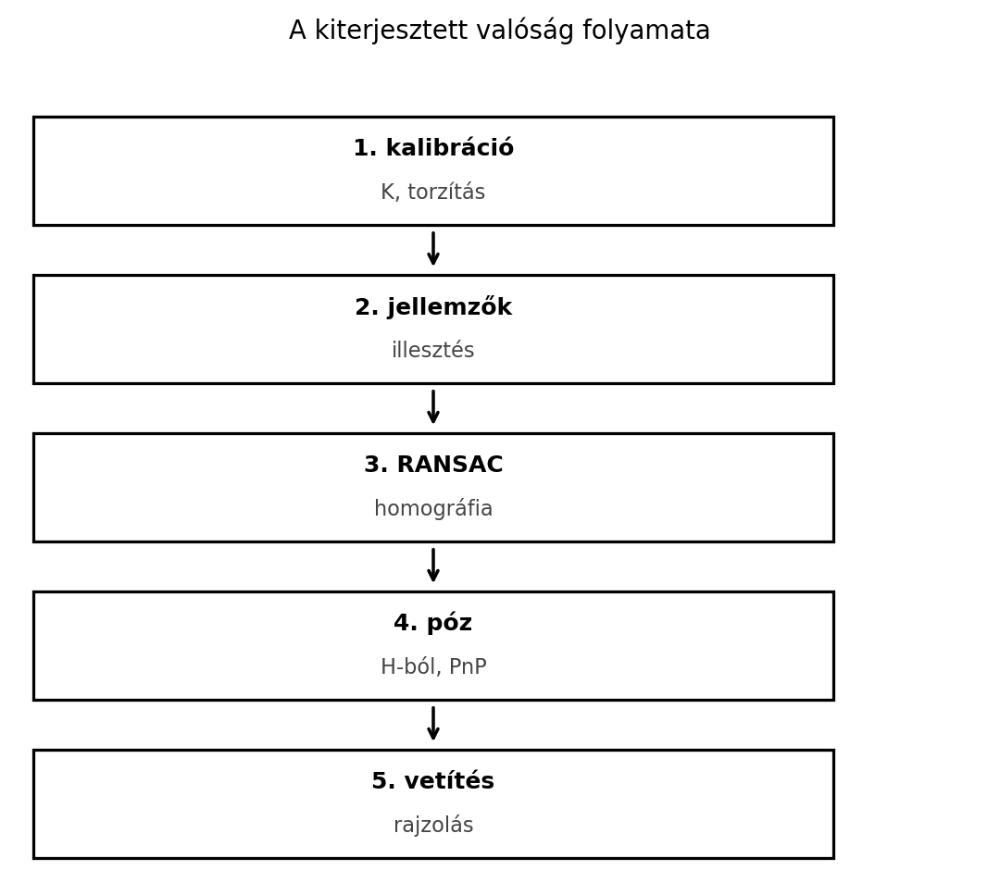
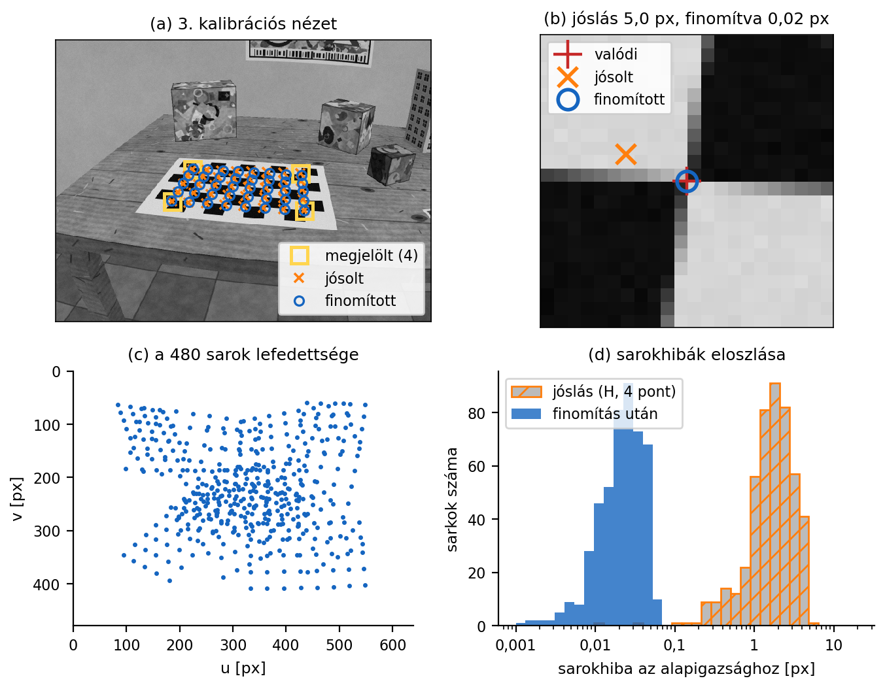
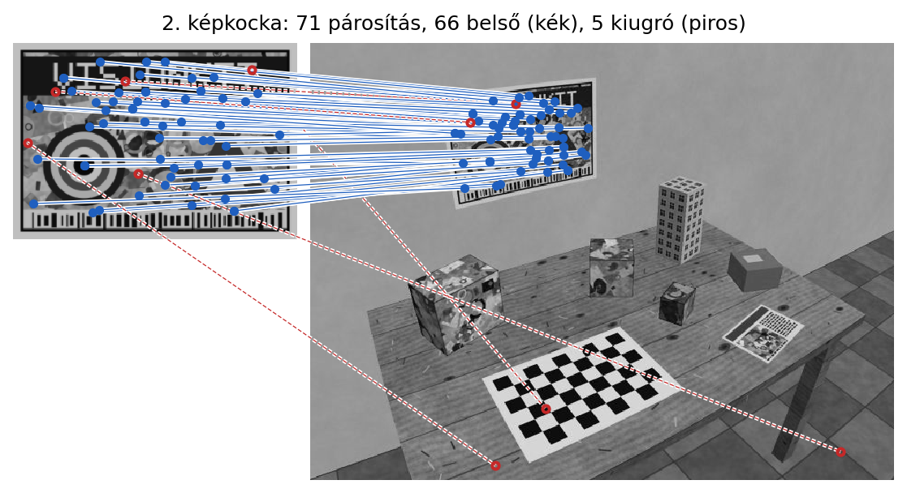
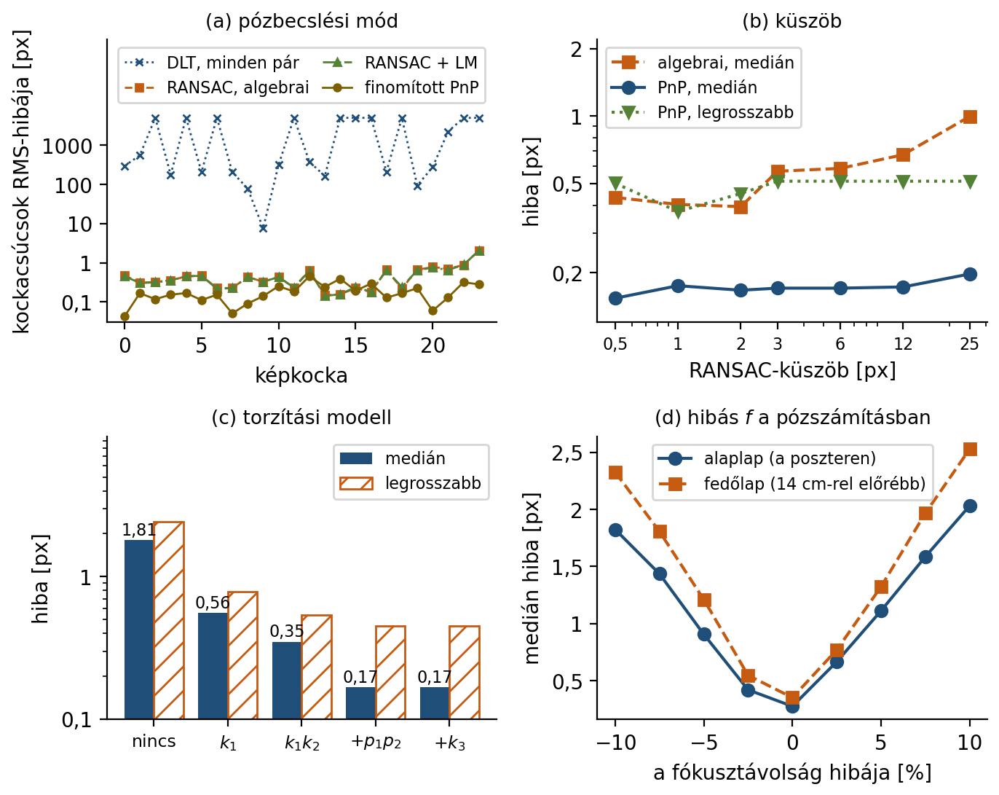

Tegyünk a futó jelenet falán lévő poszterre egy virtuális, 14 cm-es kockát úgy, hogy miközben a kamera körbejárja az asztalt, a kocka a papírhoz „ragadva” maradjon. Ez a síkbeli kiterjesztett valóság (augmented reality, AR) alapfeladata. A szemünk nagyon érzékeny rá: ha a virtuális tárgy két-három pixelt csúszkál a valódi felülethez képest, az illúzió azonnal megtörik.
A feladat a könyv geometriai részét egyetlen láncba fűzi: kalibráció, jellemzőpontok, illesztés, robusztus homográfia, pózbecslés, vetítés. Ebben a projektben nem új módszert tanulunk, hanem azt, hogyan lesz a módszerekből mérhetően működő rendszer: előre rögzített elfogadási feltételekkel, mérföldkövekkel, alapigazsághoz mért hibával, ablációs vizsgálattal és jegyzőkönyvvel.
A kész kód a visionkit.projects.ar_sfm modulban van. Úgy
dolgozz vele, mint egy vezetett projektben: minden mérföldkőnél először
írd meg a saját változatodat a visionkit függvényeiből, és
csak utána nézd meg a mintamegoldást.
Bemenetek:
scene.calibration_poses), torzító kamerával,
képzajjal (a
skálán);scene.camera_path), ugyanazzal a
kamerával.A kamera mátrixa és torzítása a feladat szerint ismeretlen. Az alapigazságot (valódi , torzítás, pózok) csak a kiértékelés használhatja; a megoldás egyetlen lépése sem olvashatja.
Kimenetek: képkockánként a kamera póza a poszterhez képest, a virtuális kocka nyolc csúcsának képe, a képre rajzolt kocka, valamint egy jegyzőkönyv a mért hibákkal.
Elfogadási feltételek (a kiértékelés előtt rögzítve):
| # | Mérőszám | Feltétel |
|---|---|---|
| F1 | kalibrációs visszavetítési RMS | px |
| F2 | sikeres pózbecslés | mind a 24 képkockán |
| F3 | a kockacsúcsok RMS-hibája képkockánként, medián | px |
| F4 | ugyanez a legrosszabb képkockán | px |
| F5 | forgatáshiba, medián | |
| F6 | a kameraközéppont hibája, medián | mm |
A regisztrációs hiba (F3–F4) a lényeg: a virtuális kocka csúcsainak a becsült és a valódi kamera szerinti vetülete közötti pixeltávolság. Valódi felvételnél ez nem mérhető, csak a belső pontok visszavetítési hibája; itt mindkettőt mérjük, és látni fogod, hogy a kettő nem ugyanaz.

A kalibráció egyszer fut le; a 2–5. lépés minden képkockán. A poszter koordináta-rendszere a poszter bal felső sarkában kezdődik: jobbra, lefelé a papíron, a falba mutat. A néző felé kiálló tárgy pontjainak tehát . A keresett póz a poszter pontját a kamerába viszi: . A virtuális kocka csúcsai ebben a rendszerben vannak megadva, ezért ha a póz jó, a kocka a poszteren marad, akárhol áll a kamera.
Az ábra a kész rendszer eredménye. A kék és a szaggatott fekete élek ennél a nagyításnál alig különböznek: ez az, amit el kell érnünk, és amit számmal is igazolunk.
A sarkok megkeresése félautomata. A négy megjelölt sarokból
homográfiát illesztünk (Homográfia becslése: DLT és
normalizálás), ezzel megjósoljuk mind a 40 belső sarok helyét, majd
a calib.refine_corner_subpix a gradiensek merőlegességéből
szubpixelre finomít (Zhang-módszer síkbeli
mintával). A jóslás a torzítás miatt néhány pixelt téved, ezért a
finomítás ablaka
pixel. Ezután a Nemlineáris finomítás és a
kalibráció gyakorlata szerinti teljes kalibráció következik
modellel.

A (d) hisztogram mutatja a finomítás hatását: a jóslás hibája pixeles, a finomítotté század pixeles.
import sys; sys.path.insert(0, "code")
import numpy as np
from visionkit import calib, camera, pose, robust, scene
from visionkit.projects import ar_sfm as ar
data = ar.ar_data() # mérési adat (figures/data/cv068_data.npz)
cap = data["calib"]
for nev, key in (("jóslás", "predicted"), ("finomítás", "corners")):
e = np.linalg.norm(cap[key] - cap["truth"], axis=2)
print(f"{nev:10s} átlagos sarokhiba {e.mean():.3f} px, legnagyobb {e.max():.2f} px")
cal = ar.calibrate_camera(cap["corners"])
K, dist = cal["K"], cal["dist"]
print("fx, fy, cx, cy =", np.round([K[0, 0], K[1, 1], K[0, 2], K[1, 2]], 2).tolist())
print("k1, k2, p1, p2 =", np.round(dist[:4], 4).tolist())
print(f"RMS {cal['rms']:.4f} px; fx szórása {cal['std']['fx']:.2f} px")jóslás átlagos sarokhiba 1.923 px, legnagyobb 4.97 px
finomítás átlagos sarokhiba 0.024 px, legnagyobb 0.07 px
fx, fy, cx, cy = [499.89, 499.86, 319.58, 239.61]
k1, k2, p1, p2 = [-0.2501, 0.0797, 0.001, -0.0008]
RMS 0.0263 px; fx szórása 0.13 pxA valódi értékek: , és . F1 teljesül. Figyeld meg, hogy ez szintetikus adat: valódi fényképen a nyomtatott lap hullámossága, az elmozdulási elmosódás és a JPEG-tömörítés miatt a sarokhiba jóval nagyobb szokott lenni.
A referenciaképet 600 pixel/méter felbontásban vesszük
(scene.surface_texture). DoG-kulcspontokat és SIFT-típusú
leírókat számítunk (Skálainvariáns detektálás: LoG,
DoG és a SIFT elve), majd minden képkocka leíróit arányteszttel
()
és kölcsönös ellenőrzéssel illesztjük hozzá (Leírók
illesztése: távolságok, arányteszt és közelítő keresés). A
referenciakép pixelét a poszter méterben mért
koordinátájára váltjuk.
A homográfia (A síkbeli transzformációk hierarchiája) a torzítatlan képre érvényes, ezért a képpontokat először a kalibrációval torzításmentesítjük (Lencsetorzítás). A poszter-koordinátát egység/méter skálával adjuk át: . Így a RANSAC szimmetrikus átviteli hibájának mindkét iránya nagyjából pixel léptékű, és a küszöb értelmes (RANSAC).

k = 7
ref = ar.reference_features()
rgb, gray = ar.render_frame(k) # ugyanaz a képkocka, mint a mérési adatban
xy, uv = ar.match_frame(ref, gray)
print(f"referencia: {len(ref[0])} jellemző; {k}. képkocka: {len(uv)} párosítás")
und = camera.undistort_points(uv, K, dist)
res = robust.ransac_homography(ar.PLANE_SCALE * xy, und, 2.0, p=0.999, max_iter=3000)
print(f"belső pontok: {res.n_inliers}, RANSAC-iteráció: {res.n_iter}")
Hm = res.model @ np.diag([ar.PLANE_SCALE, ar.PLANE_SCALE, 1.0]) # méter -> pixel
R_h, t_h = calib.pose_from_homography(K, Hm)
R_gt, t_gt = ar.poster_pose(*ar.sequence_poses()[k])
a, c = pose.pose_error(R_h, t_h, R_gt, t_gt)
print(f"H -> póz: forgatáshiba {a:.3f} fok, középponthiba {1000 * c:.1f} mm")referencia: 353 jellemző; 7. képkocka: 88 párosítás
belső pontok: 85, RANSAC-iteráció: 6
H -> póz: forgatáshiba 0.488 fok, középponthiba 11.8 mmA kimenet azt mutatja, hogy a párosításoknak csak néhány százaléka hibás: a poszter mintája gazdag, és egyik képkockán sem takarja semmi. A hibás párok hasonló helyi mintázatokból adódnak, akár a poszteren belül, akár a sakktáblán vagy a padlón. A referencián kevés (353) jellemző van, mert maga a kép is kicsi ( pixel). A két utolsó szám ugyanezen képkocka pózhibája, ha a homográfiát egyszerűen felbontjuk; ezen fogunk javítani.
A poszter sík pontjaira a vetítés , ahol az első két oszlopa. Ezért , és (lásd Zhang-módszer síkbeli mintával)
Szavakban: a
hatását levéve a homográfia első két oszlopa egy közös skálától
eltekintve a forgatás két oszlopa, a harmadik az eltolás;
előjelét úgy választjuk, hogy
legyen. A harmadik oszlop
,
és zaj mellett a mátrixot a legközelebbi forgatásra vetítjük (SVD). Ezt
végzi a calib.pose_from_homography.
A felbontás nem azt a hibát minimalizálja, amit mérünk. A
pose.refine_pnp a homográfiából kapott pózt
Levenberg–Marquardt-módszerrel finomítja a nyers
képponton, a teljes vetítési modellel (torzítással együtt),
Huber-veszteséggel (PnP: kamerapóz ismert 3D
pontokból, Robusztus veszteségek és
M-becslők):
Itt a normalizálás, a torzítás és a láncolata, pixel a becsült pontzaj. Ez a könyv visszatérő mintája: lineáris kezdőérték, robusztus szűrés, nemlineáris finomítás.
Legyen , torzítás nélkül, és a méterben mért poszterpontokat pixelbe vivő, -re skálázott homográfia
1. oszlopok -gyel. A egy vektorra . Így , , .
2. skála. és , tehát . A két norma egyenlősége azt jelzi, hogy a és a összeillik.
3. póz. , , , m. A kamera tehát a függőleges tengely körül kb. -kal elfordulva, 1,5 m-re látja a posztert.
4. a kocka egy sarka. Az alaplap bal felső sarka , a fölötte lévő fedőlapsarok . Az képlettel az alapsaroké , a fedőlapé ; osztás a mélységgel és alkalmazása: , .
Az alapsarkot a közvetlenül is megadná, a fedőlapét nem: a síkból kiemelkedő ponthoz kell , vagyis a teljes póz. Ezért nem elég a homográfia az AR-hoz, ha a tárgynak magassága van.
Kp = np.array([[500.0, 0, 320], [0, 500, 240], [0, 0, 1]])
Hp = np.array([[138.667, 0, 233.333], [-96, 333.333, 180], [-0.4, 0, 1]])
G = np.linalg.solve(Kp, Hp)
n1, n2 = np.linalg.norm(G[:, 0]), np.linalg.norm(G[:, 1])
Rp, tp = calib.pose_from_homography(Kp, Hp)
print(f"|g1| = {n1:.4f}, |g2| = {n2:.4f}, lambda = {2 / (n1 + n2):.4f}")
print("t =", np.round(tp, 4).tolist())
V = np.array([[0.19, 0.11, 0.0], [0.19, 0.11, -0.14]])
print("alap, fedő pixelben:", np.round(camera.project(V, Kp, Rp, tp), 2).tolist())|g1| = 0.6667, |g2| = 0.6667, lambda = 1.5000
t = [-0.26, -0.18, 1.5]
alap, fedő pixelben: [[281.04, 214.75], [244.65, 212.53]]A modul a mérföldköveket követi: detect_corners és
calibrate_camera, reference_features és
match_frame, estimate_pose,
overlay_errors, evaluate_sequence; a
renderelés lassú, ezért az ar_data a mért sarkokat és
párosításokat gyorsítótárba menti. A tesztek
(code/tests/test_projects_ar_sfm.py) többek között egy
renderelt nézeten ellenőrzik a sarokkeresést, kiugró pontokkal terhelt
szintetikus megfeleltetéseken a pózbecslést. Az
estimate_pose öt módszert ismer, az
evaluate_sequence mind a 24 képkockán lefuttatja a
választottat, és az alapigazsághoz méri.
names = {"all": "DLT, minden pár", "dlt": "RANSAC, algebrai", "hom": "RANSAC + LM",
"pnp": "+ PnP-finomítás", "p3p": "RANSAC-P3P"}
runs = {m: ar.evaluate_sequence(data["matches"], K, dist, m) for m in names}
print(f"{'módszer':18s} {'RMS med':>8s} {'RMS max':>8s} {'forg. [fok]':>12s} {'C [mm]':>8s}")
for m, ev in runs.items():
print(f"{names[m]:18s} {np.median(ev['overlay_px']):8.2f} {ev['overlay_px'].max():8.2f} "
f"{np.median(ev['rot_deg']):12.3f} {np.median(ev['center_mm']):8.2f}")módszer RMS med RMS max forg. [fok] C [mm]
DLT, minden pár 467.32 inf 97.893 1540.86
RANSAC, algebrai 0.39 2.08 0.731 18.98
RANSAC + LM 0.39 2.03 0.712 18.03
+ PnP-finomítás 0.17 0.45 0.225 6.52
RANSAC-P3P 0.17 0.44 0.225 6.67Az utolsó előtti sor a végleges rendszer. Ellenőrizzük a feltételeket egyenként:
ev = runs["pnp"]
checks = [("F1 kalibrációs RMS [px]", cal["rms"], 0.10),
("F3 csúcshiba, medián [px]", np.median(ev["overlay_px"]), 1.0),
("F4 csúcshiba, maximum [px]", ev["overlay_px"].max(), 2.0),
("F5 forgatáshiba, medián [fok]", np.median(ev["rot_deg"]), 0.5),
("F6 középponthiba, medián [mm]", np.median(ev["center_mm"]), 10.0)]
print("F2 sikeres képkockák:", int(np.isfinite(ev["overlay_px"]).sum()), "/ 24")
for label, value, limit in checks:
verdict = "teljesül" if value <= limit else "NEM teljesül"
print(f"{label:32s} {value:7.3f} (határ {limit:5.2f}) {verdict}")
w = int(np.argmax(ev["overlay_px"]))
print(f"legrosszabb képkocka: {w}., {ev['n_inliers'][w]} belső pár a(z) "
f"{ev['n_matches'][w]}-ból; belső pontok visszavetítési RMS-e "
f"{ev['reproj_px'][w]:.2f} px")F2 sikeres képkockák: 24 / 24
F1 kalibrációs RMS [px] 0.026 (határ 0.10) teljesül
F3 csúcshiba, medián [px] 0.167 (határ 1.00) teljesül
F4 csúcshiba, maximum [px] 0.451 (határ 2.00) teljesül
F5 forgatáshiba, medián [fok] 0.225 (határ 0.50) teljesül
F6 középponthiba, medián [mm] 6.522 (határ 10.00) teljesül
legrosszabb képkocka: 12., 91 belső pár a(z) 94-ból; belső pontok visszavetítési RMS-e 0.34 pxMind a hat feltétel teljesül. A táblázat azt is megmutatja, hogy ez nem lett volna igaz a legegyszerűbb megoldásokkal:
Az ablációs vizsgálat (ablation study) egyenként kikapcsolja vagy megváltoztatja a rendszer elemeit, és méri, mennyit romlik az eredmény. Így derül ki, melyik elem mennyit ér.

for terms in (0, ("k1",), ("k1", "k2"), ar.DIST_MODEL, ("k1", "k2", "p1", "p2", "k3")):
c = ar.calibrate_camera(cap["corners"], dist_terms=terms)
e = ar.evaluate_sequence(data["matches"], c["K"], c["dist"] if terms else None, "pnp")
n = 0 if terms == 0 else len(terms)
print(f"{n} együttható: kalibrációs RMS {c['rms']:.3f} px, fx {c['K'][0, 0]:6.1f}, "
f"AR-hiba medián {np.median(e['overlay_px']):.2f}, max {e['overlay_px'].max():.2f}")0 együttható: kalibrációs RMS 1.080 px, fx 547.6, AR-hiba medián 1.81, max 2.41
1 együttható: kalibrációs RMS 0.089 px, fx 500.5, AR-hiba medián 0.56, max 0.78
2 együttható: kalibrációs RMS 0.035 px, fx 498.8, AR-hiba medián 0.35, max 0.54
4 együttható: kalibrációs RMS 0.026 px, fx 499.9, AR-hiba medián 0.17, max 0.45
5 együttható: kalibrációs RMS 0.026 px, fx 499.9, AR-hiba medián 0.17, max 0.45for th in (0.5, 2.0, 6.0, 25.0):
e1 = ar.evaluate_sequence(data["matches"], K, dist, "dlt", threshold=th)
e2 = ar.evaluate_sequence(data["matches"], K, dist, "pnp", threshold=th)
share = np.mean(e2["n_inliers"] / e2["n_matches"])
print(f"küszöb {th:4.1f} px: belső {share:.2f}; algebrai medián/max "
f"{np.median(e1['overlay_px']):.2f}/{e1['overlay_px'].max():.2f} px; PnP "
f"{np.median(e2['overlay_px']):.2f}/{e2['overlay_px'].max():.2f} px")küszöb 0.5 px: belső 0.82; algebrai medián/max 0.43/5.21 px; PnP 0.15/0.50 px
küszöb 2.0 px: belső 0.95; algebrai medián/max 0.39/2.08 px; PnP 0.17/0.45 px
küszöb 6.0 px: belső 0.96; algebrai medián/max 0.58/2.08 px; PnP 0.17/0.51 px
küszöb 25.0 px: belső 0.97; algebrai medián/max 1.00/3.96 px; PnP 0.20/0.51 pxTorzítási modell. Torzítás nélkül a kalibráció -ra „húzza” a fókuszt, hogy a hiányzó tagot pótolja, az AR-hiba mediánja pedig a tízszeresére nő (1,81 px). A , majd a és a tangenciális tagok mindegyike mérhetően javít, a már nem: pontosan az a kép, amelyet a Nemlineáris finomítás és a kalibráció gyakorlata keresztvalidációja mutatott.
RANSAC-küszöb. A finomított PnP 0,5 és 25 px között gyakorlatilag érzéketlen: a Huber-veszteség a bent maradt rossz pontokat lesúlyozza. Az algebrai becslés viszont érzékeny: nagy küszöbnél beengedi a pontatlan pontokat (25 px-nél a medián 1,0 px), a zaj alatti küszöbnél pedig eldobja a jók egy részét is (a belső arány 0,82, és a legrosszabb képkocka hibája 5 px). Ökölszabály: a küszöb a pontzaj 2–3-szorosa (RANSAC).
Hibás fókusztávolság. Az ábra (d) része és az interaktív lap szerint 10%-os fókuszhiba mellett a kockacsúcsok csak kb. 2–2,5 pixelt csúsznak, a kamera becsült helye viszont kb. 16 cm-rel! A póz a fókuszhibát nagyrészt elnyeli: a kamera látszólag hátrébb vagy előrébb kerül, és a poszteren a vetület alig változik. A síkból kiemelkedő fedőlap hibája nagyobb, mint az alaplapé, mert ott a kompenzáció rosszabb. Aki csak a visszavetítési hibát nézi, ezt nem veszi észre; ha a pózt másra is használnád (pl. robot navigációjára), a kalibráció pontossága sokkal fontosabb lenne.
A legrosszabb képkocka a 12. (0,45 px), holott itt van a legtöbb belső pár. A 10–16. képkockák csoportja gyengébb a többinél. Mi bennük a közös?
M, p0 = ar.poster_frame()
center = np.array([0.26, 0.18, 0.0])
print("kocka | rálátás | forg. hiba | becsült szórás | középponthiba")
for k in (0, 7, 12, 14, 23):
xy, uv = data["matches"][k]
est = ev["results"][k]
inl = est["inliers"]
X = np.column_stack([xy, np.zeros(len(xy))])
fit = calib.refine_pose(X[inl], uv[inl], K, est["R"], est["t"], dist)
std = np.degrees(np.linalg.norm(np.sqrt(np.diag(fit["cov"]))[:3]))
R_gt, t_gt = ar.poster_pose(*ar.sequence_poses()[k])
v = camera.camera_center(R_gt, t_gt) - center
angle = np.degrees(np.arccos(-v[2] / np.linalg.norm(v)))
print(f"{k:5d} | {angle:5.1f}° | {ev['rot_deg'][k]:7.2f}° | {std:9.2f}° "
f"| {ev['center_mm'][k]:6.1f} mm")
corr = np.corrcoef(ev["rot_deg"], ev["center_mm"])[0, 1]
true_cal = ar.evaluate_sequence(data["matches"], ar.K_TRUE, ar.DIST_TRUE, "pnp")
print(f"forgatás- és középponthiba korrelációja: {corr:.3f}")
print(f"medián AR-hiba a valódi K-val és torzítással: "
f"{np.median(true_cal['overlay_px']):.3f} px")kocka | rálátás | forg. hiba | becsült szórás | középponthiba
0 | 30.0° | 0.10° | 0.23° | 1.9 mm
7 | 18.5° | 0.06° | 0.17° | 1.5 mm
12 | 11.9° | 0.73° | 0.39° | 19.7 mm
14 | 12.3° | 0.63° | 0.34° | 17.2 mm
23 | 32.3° | 0.40° | 0.33° | 10.8 mm
forgatás- és középponthiba korrelációja: 0.994
medián AR-hiba a valódi K-val és torzítással: 0.159 pxA „rálátás” a poszter normálisa és a kocka közepéből a kamerába mutató irány szöge; a becsült szórás a pózparaméterek kovarianciájának forgatási részéből jön (Zaj, valószínűség és becslés a látásban). Három tanulság:
Ha a valódi pózt nem ismered (valódi felvételnél sosem), a becsült kovariancia az, ami jelzi a gyenge képkockát; ez a Nemlineáris finomítás és a kalibráció gyakorlata figyelmeztetésével együtt alsó becslés. A kalibráció hozzájárulása itt kicsi: a valódi -val és torzítással a medián hiba 0,16 px (a kalibrálttal 0,17 px), vagyis a maradékot főleg a jellemzőpontok helyének zaja adja.
Minden mérés annyit ér, amennyire megismételhető. A következő hét pontot minden projektben töltsd ki; a jobb oldali oszlop ennek a projektnek a kitöltése.
| Pont | Ebben a projektben |
|---|---|
| 1. Cél és elfogadási feltételek (előre) | F1–F6 táblázat |
| 2. Adatok, magok, verziók | cv068_data.npz; képzaj 0,01; magok 68, 100–123 |
| 3. Módszer és minden paraméter | arányteszt 0,8; küszöb 2 px; ; Huber, |
| 4. Eredmény alapigazsággal | feltételenként érték és ítélet |
| 5. Abláció | torzítási modell, módszer, küszöb |
| 6. Hibaelemzés | legrosszabb képkocka, ok, javaslat |
| 7. Korlátok, következő lépés | szintetikus adat, takarás, időbeli simítás hiánya |
Továbbvitt eredmény. A projekt-jegyzőkönyv hétpontos sablonja (előre rögzített feltételek, adat és magok, paraméterek, alapigazsághoz mért eredmény, abláció, hibaelemzés, korlátok) a Záróprojekt II: kis struktúra mozgásból rekonstrukció és a Záróprojekt III: detektálás és követés szintetikus videón alapja; a kalibrált -t és torzítást a rekonstrukcióban újra felhasználjuk.
magazine) második sík: becsüld a pózt a két sík pontjaiból
együtt. Nem egy síkban fekvő pontokra a PnP jobban meghatározott.# részlet
import cv2 # ellenőrizendő: OpenCV 4.x függvénynevek és paramétersorrend
H, mask = cv2.findHomography(q, undistorted, cv2.RANSAC, 2.0)
ok, rvec, tvec = cv2.solvePnP(X[inl], uv[inl], K, dist, flags=cv2.SOLVEPNP_ITERATIVE)A síkbeli kiterjesztett valóság teljes lánca: sakktáblás kalibráció (félautomata sarokkeresés, RMS 0,026 px), a poszter referenciaképéhez SIFT-illesztés, RANSAC-homográfia a torzítatlan pontokon, a pózhoz felbontás, majd Huber-veszteséges PnP-finomítás a nyers képen. A virtuális kocka csúcsainak medián regisztrációs hibája 0,17 px, a legrosszabb képkockán 0,45 px; mind a hat előre rögzített feltétel teljesült. Az abláció szerint a kiugrószűrés, a torzítási modell és a 6 szabadságfokú finomítás nélkülözhetetlen; a puszta homográfia-felbontás három feltételen elbukna. A szemből nézett sík a leggyengébben meghatározott, a póz pedig a kalibrációs hibát részben elfedi, ezért a kis visszavetítési hiba nem bizonyítja a póz pontosságát. Továbbvitt: a hétpontos projekt-jegyzőkönyv és a kalibrált , torzítás.
, ezért és . A -val: , az osztás ugyanezt adja (a kerekítése miatt ezred pixelnyi eltéréssel).
. -nél , tehát 108 iteráció. -nél és . A projekt 3000-es korlátja ekkor már szűk: a siker valószínűsége .
Kf = np.array([[550.0, 0, 320], [0, 550, 240], [0, 0, 1]])
G = np.linalg.solve(Kf, Hp)
n1, n2 = np.linalg.norm(G[:, 0]), np.linalg.norm(G[:, 1])
Rf, tf = calib.pose_from_homography(Kf, Hp)
print(f"|g1| = {n1:.4f}, |g2| = {n2:.4f}, lambda = {2 / (n1 + n2):.4f}")
print("t =", np.round(tf, 3).tolist())|g1| = 0.6286, |g2| = 0.6061, lambda = 1.6199
t = [-0.255, -0.177, 1.62]A két norma eltér (a nem illik), kb. 1,62, és a kamera 12 cm-rel (8%-kal) távolabbinak látszik: a nagyobb fókusz „messzebbről” ugyanazt a képméretet adja.
for n in (3, 6, 12):
c = ar.calibrate_camera(cap["corners"][:n])
e = ar.evaluate_sequence(data["matches"], c["K"], c["dist"], "pnp")["overlay_px"]
print(f"{n:2d} nézet: fx {c['K'][0, 0]:.2f} ± {c['std']['fx']:.2f}; "
f"AR-hiba medián {np.median(e):.2f}, max {e.max():.2f} px") 3 nézet: fx 502.67 ± 3.06; AR-hiba medián 0.51, max 0.97 px
6 nézet: fx 499.67 ± 0.40; AR-hiba medián 0.15, max 0.42 px
12 nézet: fx 499.89 ± 0.13; AR-hiba medián 0.17, max 0.45 pxHárom nézetnél a formális szórás is jelzi a bizonytalanságot (több pixel), és az AR-hiba nagyobb. Hat változatos nézet itt már annyit ad, mint tizenkettő: a 6 és a 12 nézet különbsége a zaj nagyságrendje. Valódi képeknél, ahol a sarokhiba nagyobb, több nézet kell.
xy, uv = data["matches"][12]
truth = ar.poster_pose(*ar.sequence_poses()[12])
for n in (8, 16, 32, len(xy)):
errs = []
for seed in range(20):
idx = np.random.default_rng(seed).choice(len(xy), n, replace=False)
est = ar.estimate_pose(xy[idx], uv[idx], K, dist, "pnp")
if est["R"] is None:
errs.append(np.inf)
continue
e = ar.overlay_errors(est, K, dist, truth)
errs.append(np.sqrt(np.mean(e ** 2)))
print(f"{n:3d} pár: medián {np.median(errs):.2f} px, legrosszabb {np.max(errs):.2f} px") 8 pár: medián 0.87 px, legrosszabb 4.75 px
16 pár: medián 0.64 px, legrosszabb 1.59 px
32 pár: medián 0.56 px, legrosszabb 0.89 px
94 pár: medián 0.45 px, legrosszabb 0.50 pxA hiba a pontszámmal csökken, de lassabban, mint : ezen a gyenge képkockán a teljes halmaz hibája is 0,45 px, ennél a véletlen részhalmazok átlagosan nem adnak jobbat. Kevés pontnál a legrosszabb eset sokkal rosszabb, mint a medián, mert egy szerencsétlen térbeli eloszlás rosszul határozza meg a pózt. A teljes ponthalmazon is van kis szórás, mert a pontok sorrendje megváltoztatja a RANSAC mintáit.
A kocka minden pixelén ki kell számítani a kocka mélységét (a lapok
és a pixelsugár metszéspontja), és csak ott rajzolni, ahol ez kisebb a
valódi jelenet mélységénél. Valódi mélységtérkép jöhet
sztereóból (Sztereóillesztés: blokkillesztés és
SGM), aktív mélységszenzorból (Mélységtérkép,
pontfelhő és aktív mélységszenzorok) vagy egyképes mélységbecslő
hálóból (Mélységbecslés hálóval; skálája
ismeretlen, a poszter ismert pózához kell igazítani). Szintetikus
jelenetben ellenőrzésre a scene.render depth
tömbje használható. A takarási élek pontatlansága a mélységtérkép
felbontásától és zajától függ.